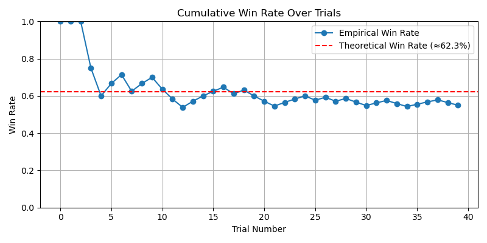
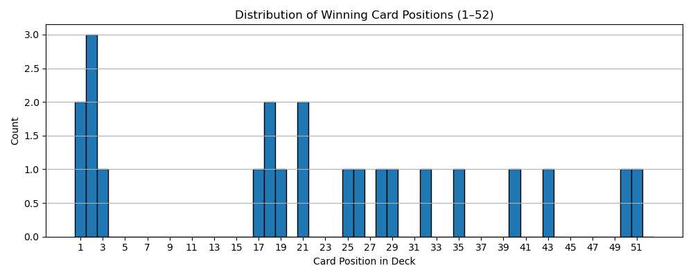
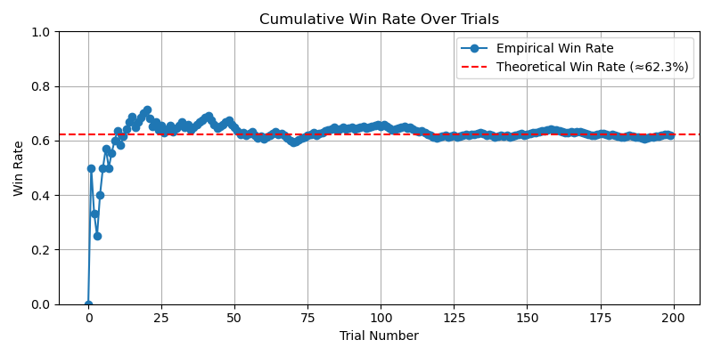
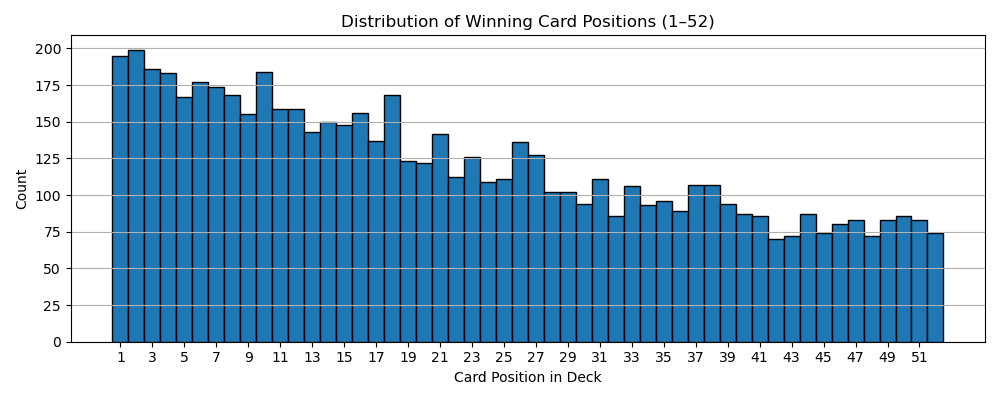

Milana Komisarova
Math lover • Problem solver • Always learning
 milana.komisarova@gmail.com
milana.komisarova@gmail.com +371 26855516
+371 26855516 LinkedIn
LinkedIn CV
CVAbout Me
I’m passionate about mathematics and problem solving,
with years of experience in olympiads and competitive environments.
I enjoy diving into new ideas and learning fast,
and I’m currently open to math-related opportunities where I can contribute and grow.
This website is still a work in progress :)
Awards & Achievements
Olympiads
International
- IMO honorable mention, 2022
- Baltic Way 4th place, 2021
- IOL participant, 2021
- APLO honorable mention, 2020
Latvian National
- Mathematics, gold 2019,2021,2022, silver 2021
- Physics, bronze 2020
- Biology, participant 2022
- Chemistry, participant 2021
- German, participant 2021
Latvian Open
- Mathematics, gold 2016, 2017, 2018, 2020, 2021, silver 2015, 2019, 2022
- Linguistics, silver 2020, 2021, 2022
Debates
- Best Speaker Award 2021 - World Schools Tournament (English)
- Best Team Award 2021 - World Schools Tournament (English)
- Best Team Award 2021 - Zemgale and Riga Regionals (Latvian)
- Semi-Finalist participant 2020 - Jugend debattiert, Latvian Nationals (German)
Programs - participant
- Healthcamp, Jun 2024
- Jane Street Insight Trading Program, Apr 2024
- European Summer Rationality Program (ESPR), Aug 2023
Scholarships
- Ecole Polytechnique Excellence Scholarship, 2022
- Latvian National Excellence Scholarship (“Zelta Stipendija”), 2022
- State Centennial Scholarship (“Simtgades Stipendija”), 2022
Awards
- Janis Kasakovskis Award (top overall math olympiad performer in Latvia for grades 5-12), 2022
Languages
- Russian - native
- Latvian - native
- English - C1 (14 years)
- French - B2 (8 years)
- German - B1 (4 years)
Some of my projects
I did all of this for fun, getting inspired from different games I saw in the world.
🃏 The best strategy to win a card game "Beat The Deck"
I've been seeing this game called 'Beat The Deck' on TikTok, played by Highland Bros.
🎮 Game Rules
It is a very simple one player card game played with a standard deck of cards, and the rules are as follows: You put 9 cards on the table face up, the rest in a pile face down. Then, you point at an existing card on the table and say either 'higher' or 'lower' (or 'under' and 'over'). You flip the upper card from the pile. Then you compare both of their ranks. For example, if you said 'higher' and the new card's rank is higher than the card's you pointed at, you are right and you place the new card face up on top of the one you pointed at to continue this pile. If you are wrong, you place the card on top and flip the pile upside down, so it becomes inactive. You proceed the same way, pointing at any pile, saying your guess and revealing the next card, and either growing the piles or deactivating them. You win if all cards from the original pile are now distributed into those 9, or lose if all piles get deactivated, but you still have cards left.
🤔 Why I got curious
I obviously tried playing it myself as well, but I couldn't help but notice I always lose. I tried starting with more than 9 piles, but still noticed I kept losing in most cases. I think the most interesting card games like these are the ones that have around 50% chance of winning, so that you can ask yes/no questions before playing, and then if you lose the game the answer is no, if you win - the answer is yes (obviously, just for fun, not for any important decisions).
🧪 Simulation Setup
I decided to run a few simulations with different algorithms and number of starting piles of this game to see what are the chances of winning in each case and how can I play it to get the 50% chance. I thought of 5 strategies I can test and tested each of them with 9, 10, 11 and 12 starting piles by simulating 1000 games with each.
I want to note that since each time running this game we get different randomized decks, the probabilities also change, but they usually stay in the same range with a difference about 2%.
🎲 Strategy 1: Fully random
First I tested the fully random strategy, just to see how it does. It randomly chooses a pile and randomly says higher or lower.
Strategy 1 - Estimated win probability with 9 piles: 0.000
Strategy 1 - Estimated win probability with 10 piles: 0.000
Strategy 1 - Estimated win probability with 11 piles: 0.000
Strategy 1 - Estimated win probability with 12 piles: 0.001
Well, the results weren't that surprising. This is obviously not the way this game should be played.
🎲 Strategy 2: Most extreme value + random on 8
When I played this game myself, I noticed I use a strategy as follows: I choose the pile that is furthest from the middle value (8), and say accordingly higher, if the card is 2-7, and lower, if the card is 9-A. And if I have only 8's left, I choose randomly.
Strategy 2 - Estimated win probability with 9 piles: 0.071
Strategy 2 - Estimated win probability with 10 piles: 0.147
Strategy 2 - Estimated win probability with 11 piles: 0.284
Strategy 2 - Estimated win probability with 12 piles: 0.470
As we can see, I wasn't wrong, playing with my strategy and original 9 piles only has 7% chance of winning! However, playing the game with 12 piles and this strategy is a great option, as we get 47% chance of winning!
🎲 Strategy 3: Same as strategy 2, but random on 7,8,9
I looked at quite a few videos of Highland Bros, and noticed that the strategy that was used sometimes was almost the same as mine, but they sometimes went randomly on 7 and 9 as well.
Strategy 3 - Estimated win probability with 9 piles: 0.047
Strategy 3 - Estimated win probability with 10 piles: 0.132
Strategy 3 - Estimated win probability with 11 piles: 0.242
Strategy 3 - Estimated win probability with 12 piles: 0.381
Well, the probability of winning obviously is lower. Since they always play with 9 piles, that means that in some of their videos the probability of winning is under 5%! It's also interesting to note that going random on 7 and 9 decreases the chances of winning by quite a lot, for example, by 9% in case of playing with 12 piles.
🎲 Strategy 4: Global guess with memory
Obviously, remembering the remainig cards is very useful in many card games. That is why I decided to test out the following strategy. It remembers all the remaining cards in a pile, looks at whether there are more cards over 8 or under 8, and respectively decides whether to say 'higher' or 'lower'. Then, it chooses the best pile in that direction, that is, the smallest card on the table if the guess is 'higher' and the other way around.
Strategy 4 - Estimated win probability with 9 piles: 0.012
Strategy 4 - Estimated win probability with 10 piles: 0.039
Strategy 4 - Estimated win probability with 11 piles: 0.076
Strategy 4 - Estimated win probability with 12 piles: 0.133
As we can see, it didn't perform very well. I think it is because there is quite similar amounts of cards over and under 8 at any time, so this is not very useful information to go off.
🎲 Strategy 5: Local guess with memory
This is a strategy that also uses memory, but localizes the last strategy. It remembers all the cards and then checks with each pile, how many cards are left 'higher' and 'lower'. Then, it just picks the pile with the biggest margin and the corresponding direction and guesses that.
Strategy 5 - Estimated win probability with 9 piles: 0.125
Strategy 5 - Estimated win probability with 10 piles: 0.274
Strategy 5 - Estimated win probability with 11 piles: 0.451
Strategy 5 - Estimated win probability with 12 piles: 0.646
As we can see, it performs amazingly well, even crossing the 50% mark with 12 piles. Obviously, in real life it's not very easy to play this way, as this requires unrealistically good memory.
📊 Observations & Takeaways
The best way to play this game as a human being is using strategy 2 with 12 piles, since the win probability is around 47%, which is the closest we got to 50%. However, if your memory is exceptionally well and you wouldn't mind remembering all remaining cards and doing lots of comparisons, then strategy 5 with 11 piles is great as well.
🎲 Testing out Montmort's matching problem
While taking the a probability course on edX, I stumbled upon the "Montmort's matching problem", and since the result seemed absolutely unbelievable to me, I've decided to try it out myself.
🎮 The Theory
The problem is as follows: "Consider a well-shuffled deck of n cards, labeled 1 through n. You flip over the cards one by one, saying the numbers 1 through as you do so. You win the game if, at some point, the number you say aloud is the same as the number on the card being flipped over (for example, if the 7th card in the deck has the label 7). What is the probability of winning?" (from edX).
Apparently, the probability of this is 62%, which absolutely shocked me so much that I've decided to play the game myself (physically) and see whether that is true. It is known that there is an insane amount of ways you can shuffle the deck and to have a 62% probability of finding one right card seems absolutely unreal.
🧪 The Setup
I took my playing card deck, and then decided that I'm going to call them out in the standard new deck order - ace to king of spades, ace to king of diamonds, ace to king of clubs, ace to king of diamonds. I ended up doing this 40 times and actually won on my first three times and almost cried happy tears. It took me 24 minutes to do the first 20 games + writing down the results, then I took a break, and then it took me exactly 24 minutes again to do the last 20 games.
📊 The Results
As we can see, the winning rate dropped below the theoretical 62% after my 18th game and never came back, but it still stayed close enough at around 55%. If I had to guess the approximate rate before playing the game or reading the theory, I would have guessed no more than 5%.
Even though I only played 40 games, I've had winning positions repeat even 3 times. Firstly, it seemed so weird that I keep winning almost instantly, but then I realized that since I only look at the first winning position, winning positions are more likely to be at the beginning of the deck, which might seem counterintuitive at first.
💻 Computer simulation
I decided to test it out on a computer as well to see when does it start converging to 62% and how would the winning position distribution look like.
I ran the code with a few different randomly generated decks, and we can see that at 100 games it still wiggles a bit, but it it quite close to the theoretical result after 200 games.
I ran the code with 10000 games to obtain this wonderful distribution of the winning positions and we can obviously see that the winning positions that are closer to the beginning are the most common.
📊 Observations & Takeaways
Overall, the theory obviously is right, even though it might seem unbelievable at first. This was a very interesting experiment for me and I really enjoyed playing it.
🤖 Which AI models can solve EGMO 2025 problems?
EGMO 2025 has taken place recently, and the problems were really interesting. After solving a few myself, I decided to test out how different AI models would do at this year's EGMO.
Problem 1
For a positive integer \(N\), let \(c_1 < c_2 < \cdots < c_m \) be all the positive integers smaller than \(N\) that are coprime to \(N\). Find all \(N \geq 3\) such that \( \operatorname{gcd}\left(N, c_i+c_{i+1}\right) \neq 1 \) for all \(1 \leq i \leq m-1\). Here \(\operatorname{gcd}(a, b)\) is the largest positive integer that divides both \(a\) and \(b\). Integers \(a\) and \(b\) are coprime if \(\operatorname{gcd}(a, b)=1\).
The answer to this problem is all even \(N\) and all \(N\) that are powers of 3.
The solution steps are proving that all even \(N\) work, proving that all \(N = 3^m\) work, proving that other numbers don't work.
| Model | Solution | Reasoning | Notes |
|---|---|---|---|
| ChatGPT 4o | 🟡 all even | ❌ None | Got evens right, no odd case proof |
| ChatGPT o3 | ✅ all even, \(3^k\) | ✅ Strong | Perfect! |
| ChatGPT o4-mini-high | ❌ \(2^a3^b\) | ❌ None | Found examples |
| Claude 3.5 Sonnet | ❌ \(2^k\) | ❌ None | Found examples |
| DeepSeek | ✅ all even, \(3^k\) | ❌ None | Correct answer, no explanation given |
| Grok 2 | ❌ \(p^2\) | ❌ None | Didn't even test cases |
As we can see, only ChatGPT o3 was able to fully solve the problem and provide a proper solution, all the other models would've gotten a 0 on this problem, except possibly DeepSeek getting 1 point for the correct answer and ChatGPT 4o maybe getting 1 point for proving that even numbers work.
Download any related files
Hobbies
- Everything math
- Traveling
- Sudoku
- Board games
- Learning languages (beginner in Ukrainian, Italian, Spanish and Korean)
Fun Facts
- I can name 100 Taylor Swift songs off the top of my head.
- I moved to France before ever visiting it. Thankfully, it turned out pretty okay. Would I do it again? Probably no.
- I ate oatmeal every single breakfast for almost 5 years and stopped only because my dad found an article that says it is not good for you.
- I don't have russian letters on my computer keyboard, so I've been typing by memory for many years. I still make many mistakes but haven't committed to buying stickers with letters.
- I recently got Wordle in 1 with my starting word of 3+ years. I was sooo happy!
Everything about my travel
Countries I’ve Visited
I love traveling and exploring new places, so I'm always open for more travel!
My ranking of cities I've visited
- London
- Riga
- Vienna
- Prague
- Geneva
- Amsterdam
- Lisbon
- Venice
- Berlin
- Oslo
- Reykjavik
- Budapest
- Brussels
- Bratislava
- Zurich
- Maastricht
- Aachen
- Milan
- Cambridge
- Podgorica
My food recommendations in cities I've been to
These all are places I ate at that I recommend and love with some comments about my favourite things there.
Alicante 🇪🇸
- Vegan Bombon - gf pastries and sorbet
Amsterdam 🇳🇱
- Wok to walk - great noodles, filling and customizable
Brussels 🇧🇪
- Lobster house - delicious mussels, great vegetable soup
- La friterie - amazing truffle mayonnaise
- Veganwaf - vegan and gluten-free waffles, can add fruits
- The sister brussels cafe - healthy food, great soup and delicious juice
- Friterie Tabora - insane choice of sauces
- Joe and the Juice - amazing smoothies
- Sushiavenue - Ukrainian owned and delicious sushi, unique flavours
- The Noodle Bar - huge portions (but cannot order one portion for two people), delicious and lots of options
- La cai - amazing delicious açai, and lots of add-on options
Budapest 🇭🇺
- Fruitissimo - stress killer smoothie is chef's kiss
- Tesco - gluten free cheese baguette
- Müller - палки с сыром и розмарином
- Oriental Soup house - huge soups with noodles and lots of meat
- Tibidabo - gluten free cinnamon rolls
- Buddha original - insane strawberry lemonade and wok
- Cube sushi - tastiest sushi in my life (but expensive), insane presentation and variety
- Fuego - great salad and duck
- Matcha island - lots of fun matchas
Cologne 🇩🇪
- Isabella - gluten free pastries
Daugavpils 🇱🇻
- Skovorotka - pickle sauce, gluten-free brownie, chicken sashlik
Dusseldorf 🇩🇪
- Vapiano - pizza
- Isabella - pastries
- Wakaba - matcha
Gdansk 🇵🇱
- Salad story
- Mono kitchen - steak, gf pasta, gf brownie
Lisbon 🇵🇹
- Wok to Walk
- Potato project - potato fries
- Gelato therapy - amazing strawberry sorbet
- Bubble time - bubble tea
- Rice me deli - gluten free pastel de nata
- Butchers Saldanha - delicious steak and herbs butter !!!
- Sushicome - all you can eat sushi
- Totale Pizzeria - gluten free bbq pizza with loads of meat/li>
- Hayaci - all you can eat sushi
London 🇬🇧
- Wagamama - always warm and comforting meals like soups, noodles, great sorbet as well
- Pizza express - amazing gluten free pizza, many locations
- Flat iron - steak
- Acai berry - tasty açai bowls
- Blank street - matcha
- T4 - bubble tea
- Bbq Bodeans - huge platters of meat, all tasty
- Bobar - bubble tea
- Rodeo doughnuts - gluten free donuts
Munich 🇩🇪
- Isabella - gluten free pastries
- Niu asian cafe - very cute, loads of options (I had a salted caramel hot chocolate), gluten free cakes
- Vapiano - gluten free pizza
- Cotidiano - great salad, gluten free brownies, pink latte
Paris 🇫🇷
- Hippopotamus - the best steak (entrecote), delicious roquefort sauce, amazing fruit sorbet
- Nachos - my go-to, mexican style bowl
- Sushi Antony - favourite place, all you can eat sushi with the best choices and service ever
- Boboq - my favourite bubble tea in Paris, great choices, all yummy
- Robert et Louise - huge steak, amazing bearnaise sauce, unbelievable creme brulee
- Chipotle - okay mexican style bowls
- Arco BBQ steakhouse - steak and interesting sauce, but only one option
- Costco - the best guacamole
- Sushi way - sushi that arrive on the train
- Oakberry - okayish açai bowls/li>
- Bubbleology - mid bubble tea, the bubbles are old
- Poke House - poke bowls, great choice
Prague 🇨🇿
- Laboratorio Della Pizza - the best gluten free pizza ever, the truffle one is insane
Riga 🇱🇻
- Lido - the best, cheapest, tastiest food
- Ganbei - tasty meats, rice, great sushi
- Bubble Tea Riga - best bubble tea ever
- Better Bread - gluten free pastries and strawberry vanilla matcha
- Wok to Walk
- Rocket Bean - strawberry matcha
- Cofyz - matcha
Rouen 🇫🇷
- Hanoi Delices - okay bubble tea
- Nachos - my go-to, mexican style bowl
Salzburg 🇦🇹
- Boba and chill - bubble tea
- L’osteria - huge portions gluten free pasta, a bit too salty for me
- Beccofino - terrible service, gluten free pizzas
Valencia 🇪🇸
- Poke House - great choices, cute vibes
Zurich 🇨🇭
- Coop - bananas, smoothies, salads
Warsaw 🇵🇱
- Kuchnia Marche - normal food
Everything about my music preferences
My favourite songs throughout the months
Those are my Spotify most-streamed songs of the month, the statistics are from an app called stats.fm.
🗓️April 2025
- Свободный полет - Валерий Меладзе
- Tornado Warnings - Sabrina Carpenter
- Свет уходящего солнца - Валерий Меладзе
- Салют, Вера! - Валерий Меладзе
- Цветы - Lida
🗓️March 2025
- Цветы - Lida
- Лох - Lida
- Эго - Lida
- Tornado Warnings - Sabrina Carpenter
- Shut Down - Blackpink
🗓️February 2025
- Дом (Лондон, Прага, Ницца) - Morgenshtern
- Лох - Lida
- Фото со звездой - Lida
- right where you left me - Taylor Swift
- Забери меня ночью - Мейби Бейби
🗓️January 2025
- The Prophecy - Taylor Swift
- ЧСВ - Lida
- Фото со звездой - Lida
- Я не употребляю - Voskresenskii
- Зайка - Мейби Бейби
Other months
- Фото со звездой - Lida, December 2024
- Cadillac - Morgenshtern, November 2024
- Я не употребляю - Voskresenskii, October 2024
- Влюблино- Lida, September 2024
- Лада Турбо Спейс - Lida, August 2024
- Guilty as Sin? - Taylor Swift, July 2024
- Guilty as Sin? - Taylor Swift, June 2024
- The Smallest Man Who Ever Lived - Taylor Swift, May 2024
- Лига Опасного Интернета - Oxxxymiron, April 2024
- Город под подошвой - Oxxxymiron, March 2024
- right where you left me - Taylor Swift, February 2024
- right where you left me - Taylor Swift, January 2024
Concerts I've attended
- Valery Meladze -📍Zurich, 📅Mar 2025 (30th Anniversary Tour)
- Sabrina Carpenter -📍Paris, 📅Mar 2025 (Short n' Sweet Tour)
- Monetochka -📍Lisbon, 📅Nov 2024
- Taylor Swift -📍Warsaw, 📅Aug 2024 (The Eras Tour)
- Taylor Swift -📍Munich (from Olympiaberg), 📅Jul 2024 (The Eras Tour)
- Morgenshtern -📍Amsterdam, 📅May 2024
- Taylor Swift -📍Paris, 📅May 2024 (The Eras Tour)
- Harry Styles -📍Paris, 📅Jun 2023 (Love On Tour)